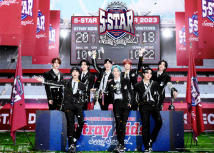

Stray Kids
SURVIVAL
-
The reason for the group's birth is somewhat experimental and unusual. When JYP Entertainment started preparing for a new boy group, Park Jin-young made a suggestion to Bang-chan, who was a trainee for 7 years at the time: Bang-chan formed a team himself, practiced, and was ready for the company I'll make you debut if you're judged. It can be said to be a literal self-produced/self-made idol in which trainees are in charge of organizing and producing members and the company only reviews them.
-

-

5star
-
- 5-STAR Dome Tour 2023
- first dome tour since its debut. It sold out all seats at high speed, attracting explosive attention from local fans even before the start.
- which entered Gocheok Dome for the first time among the "4th Generation Boy Group," proved themselves why they are Five Stars.
- 
maniac

-
- 2nd World Tour 'MANIAC'
- He entered the Bank of California Stadium in Los Angeles (BMO Stadium) and set a record of the second North American stadium performance in the history of the K-pop boy group.
스트레이키즈 빌보드 설명
- billboad
- Following the success of our albums "MAXIDENT" and "ODDINARY", Stray Kids won first place three times with our 5-STAR album